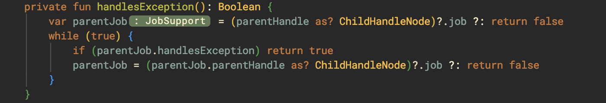
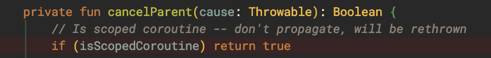

When we first starting using Coroutine, it’s not always easy to figure out how an exception is propagated through a constructed Coroutine.
Even there is already an article, Kotlin Coroutine Job Hierarchy — Succeed, Fail, and Cancel, which shows a bunch of combinations of jobs, launch, and async, etc. It’s still seems no pattern for that, or maybe just because we don’t understand enough to see it.
After digging into the source code, it turns out that it’s quite simple and can be summarized into a few key points, which you need to know to write an “exception free constructed Coroutine”.
Basic concept
CoroutineContext
To put it simply, CoroutineContext is like Collection. That’s why there are methods like get, fold and plus. And also the CoroutineContext.Element.
Since CoroutineContext is an interface, there is a CombinedContext as the implementation. It’s the class that Coroutine will use to chain the Elements together.
Job like StandardCoroutine, CoroutineDispatcher like Dispatcher.Default, and Handler like CoroutineExceptionHandler are all considered as CoroutineContext.Element.
Class Hierarchy
Almost every Coroutine class is from CoroutineContext:
StandaloneCoroutine → AbstractCoroutine → JobSupport → Job →
CoroutineContext.Element → CoroutineContextBecause they are all the same, so in the following content, I will use:
- Coroutine as normal Coroutine.
- Scope as
ScopeCoroutine. - Handler as
CoroutineExceptionHandler.
Key methods
In this section, I will talk about some key methods used during the exception propagation path. The method call in order would be like:
tryFinalizeFinishingState → cancelParent
Being called when a Coroutine is about to be completed for any reason.
cancelParent → childCancelled
The method will call to the parent Coroutine with parent.childCancelled to see whether its parent can handle the exception or not. If not, it means the current Coroutine needs to handle it by calling to handleJobException.
The key points of the method are:
- Return true or false?
- false, the current Coroutine needs to handle it by calling to
handleJobException. - true, the exception is handled by the parents.
- false, the current Coroutine needs to handle it by calling to
childCancelled
childCancelled is called from child Coroutine to see whether an exception is handled by parent Coroutine. It is overrided by:
ChildHandleNode, which will call tojob.childCancelledthat is defined inJobSupport.
-
NonDisposableHandle, which will always returnfalseand be used in a Coroutine chain as the top-most parent.
Normally, all coroutines will use the first implementation, which will call from cancelImpl then notifyCancelling eventually to cancel both parent and child coroutines.
In the meanwhile, it will also call to handlesException to check whether there is any parent that can handle the Exception, in which the return value will be false if the parent Coroutine is the top-most.
The key points of the method are:
- Been override or not?
- No, it will call to
notifyCancellingto cancel all the others. - Yes, mostly will return false directly and won’t do any cancellation.
- No, it will call to
- Return true or false?
- false, the child may be forced to handle exception
- true, the parent claims to handle it.
handlesException
It is clear from the comment that all Job should be able to handle the exception. But not for it’s subclass JobImpl:

As you can see, if the current Coroutine’s parent is not ChildHandleNode, then it should be NonDisposableHandle, for which false will be returned directly. Otherwise, it will try to ask a parent for handling exception.
The key points of the method are:
- Basic Job will handle the exception by default.
Jobcreated byJob()andSupervisorJob():- Won’t handle the exception if it is the top-most in a coroutine chain.
- Ask the parent to handle if there is one.
handleJobException
The method is used to indicate whether an exception is handled by the current Coroutine and returns false by default.

The key points of the method are:
- Only override by
StandaloneCoroutineorActorCoroutine, meaning only the two classes will handle exceptions with Handler and throw an exception if they fail to handle.
completeStateFinalization
The method will be called at the end of tryFinalizeFinishingState, calling notifyCompletion from ChildCompletion to invoke all Coroutines to go into completion and call tryFinalizeFinishingState again eventually.
Before running into tryFinalizeFinishingState, it will wait for the child. That’s why a parent Coroutine won’t complete itself immediately.
ScopeCoroutine
The three kinds of classes are ScopedCoroutine:
BlockingCoroutine→runBlockingTimeoutCoroutine→withTime- Subclasses of
ScopeCoroutine:DispatchedCoroutine→CoroutineScopesin launch,asyncUndispatechedCoroutine→coroutineScope,supervisorScopeFlowCoroutineSupervisorCoroutine
handleException
Since Scope doesn’t override childCancelled and handleException. A scope will return true from childCancelled, which claim to handle the exception.
isScopedCoroutine
All Scopes will have this field as true, meaning it will early return true in cancelParent:

This means that it won’t propagate the exception to the parent or any others but will rethrow the exception.
To see where it rethrows the exception, let’s use coroutineScope as an example:
The function will lead us to undispatchedResult and you will see the block is executed inside a try-catch:

And it rethrows if the final state we got is CompleteExceptionally:
In this way, we can catch the exception with try-catch without setting the Handler on parent.
Supervisors
The only difference between SuperviorCoroutine/SupervisorJob and Coroutine/Job are that they override childCancelled. Both will return false directly:
Without calling to cancelParent as well, it means when there is an exception that comes up, they won’t perform any cancellation nor propagate notifyCancelling to cancel the others.
The key points here are:
- SupervisorJob/SupervisorCoroutine will silence exceptions.
- Their child will be forced to handle the exception.
Summary
Let’s use the most commonly used component as an example and categorize them into three characteristics:
- Override
handleJobException? Yes means that it can use Handler to handle the exception. - Override
childCancelled? Yes means that it won’t notify others to cancel. - Override
handlesException? Yes means that it won’t claim to handle exception by default.
And the result will be as below:
It obvious that only coroutines from launch will use Handler to handle the exception. And only members of the supervisor family won’t propagate the exception to others.
Even at the end of this article, I think it might still confusing how the exception gets propagated. In the next part, I will show you how to find the propagation path graphically: